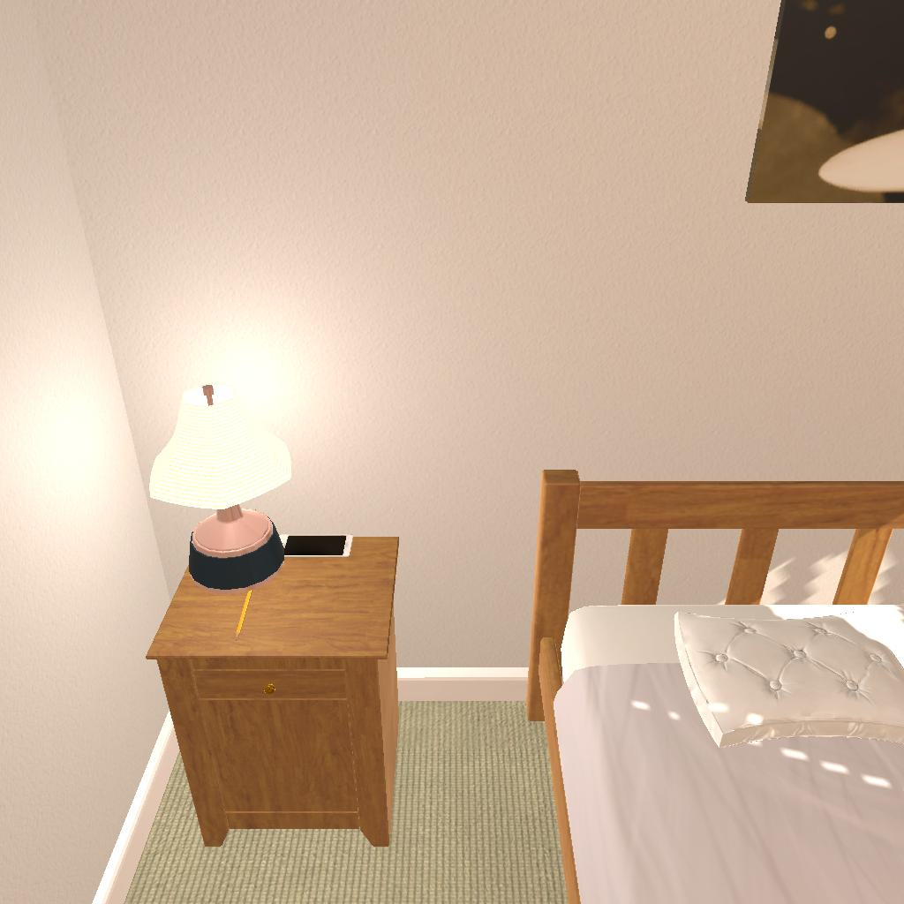

---------------------------------------------------------task: 0---------------------------------------------------------
--------------------------------------------------------------------------------------------------------------------------------------------------------------------
--------------------------------------------------------------------------------------------------------------------------------------------------------------------
Step:--------------------------------------------------------------------------6-------------------------------------------------------------------------------
----------------------------------------
VLM Prompt:
Image1:
**Instruction**
1. Analyze the provided image to identify all visible household objects, focusing on those relevant to the task description "examine the alarmclock with the desklamp."
2. Use the analysis of the image and the task hint "The agent must find an object of the desired type, locate and turn on a light source with the desired object in-hand." to answer the question: what is the most reasonable action in the choices for the task description "examine the alarmclock with the desklamp"?
4. Decide and write the answer using the template: The answer is: (i): , where i is the real number. If there is no desired object in the image, search every place based on **Initial Observation** to find the object. And if no one is exactly correct, choose a similar answer.
**Initial Observation**
You are in the middle of a room. Looking quickly around you, you can see bed (1), sidetable (1), drawer (1-11), dresser (1), safe (1), laundryhamper (1), garbagecan (1)
**Answer Choices**
(1): go to bed 1
(2): go to drawer 1
(3): go to dresser 1
(4): go to drawer 3
(5): go to drawer 4
(6): go to drawer 5
(7): go to drawer 6
(8): go to drawer 7
(9): go to drawer 8
(10): go to drawer 9
(11): go to drawer 10
(12): go to drawer 11
(13): go to safe 1
(14): go to laundryhamper 1
(15): go to garbagecan 1
(16): take pillow 1 from sidetable 1
(17): take cellphone 1 from sidetable 1
(18): take pencil 1 from sidetable 1
(19): use desklamp 1
**Answer**
Let's think step by step by following the instructions.
----------------------------------------
----------------------------------------
Original Response:
The task is to examine the alarm clock with the desk lamp. In the image, we can see a sidetable with a lamp (desklamp 1) on it. There is no visible alarm clock in the image, but we can assume it might be in one of the drawers, as that is a common place to store such an item. The analysis indicates that the agent needs to find the alarm clock and then use a light source, in this case, the desk lamp, to examine it.
Since the image does not provide a clear indication of where the alarm clock is and we have to search based on the Initial Observation, the most reasonable action would be to start searching the drawers, as they are the most likely place to find the alarm clock.
The answer is: (2): go to drawer 1.
----------------------------------------
----------------------------------------
>>> Refine Original VLM Response and Get Pure Action: go to drawer 1
----------------------------------------
-----------------------------------------------------------------
Running time: 13.159526109695435 seconds
Total Money: 0.12534
-----------------------------------------------------------------
-----------------------------------------------------------------
Text Observation:You arrive at loc 2. The drawer 1 is closed.
-----------------------------------------------------------------
UNSUCCEED